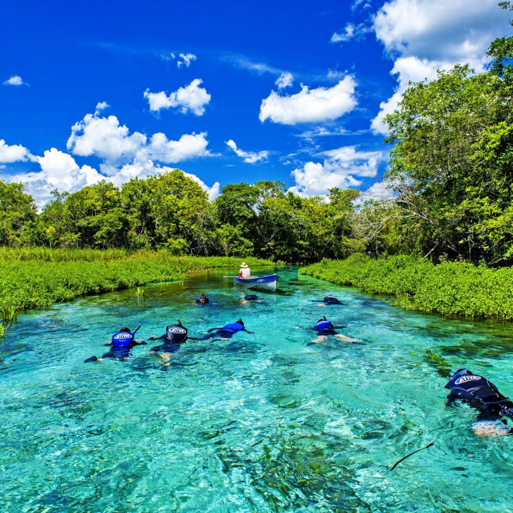

Localizado na região Centro-Oeste do Brasil, o Mato Grosso do Sul é um estado estratégico que abriga parte do exuberante Pantanal e do Aquífero Guarani. Com capital em Campo Grande, sua economia é fortemente impulsionada pelo agronegócio e pelo turismo ecológico, oferecendo uma rica mistura cultural com fortes influências indígenas e fronteiriças.

Voltar